Figures of the paper
In this section we attach all the figures of the mauscript in high defininition (300DPI).

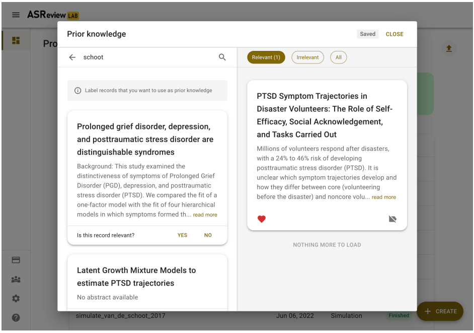
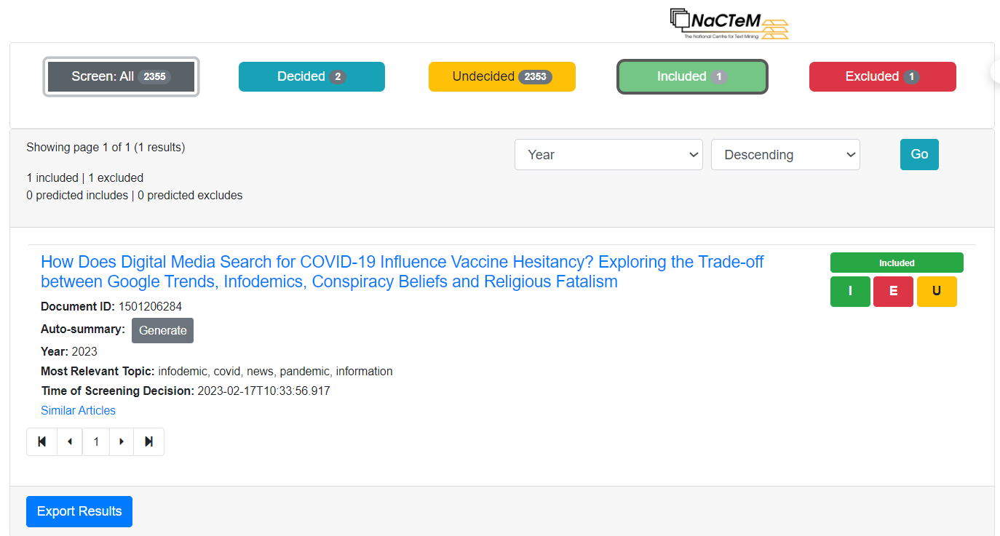
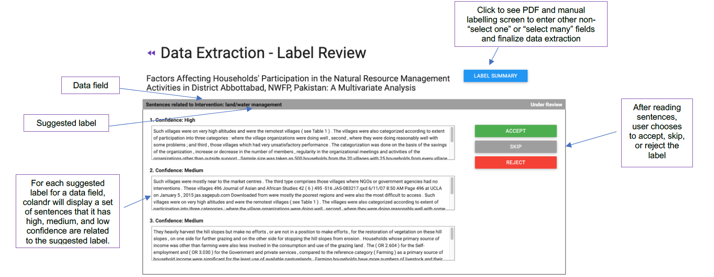
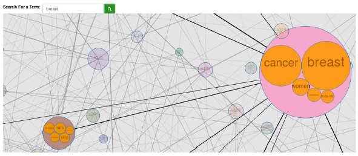
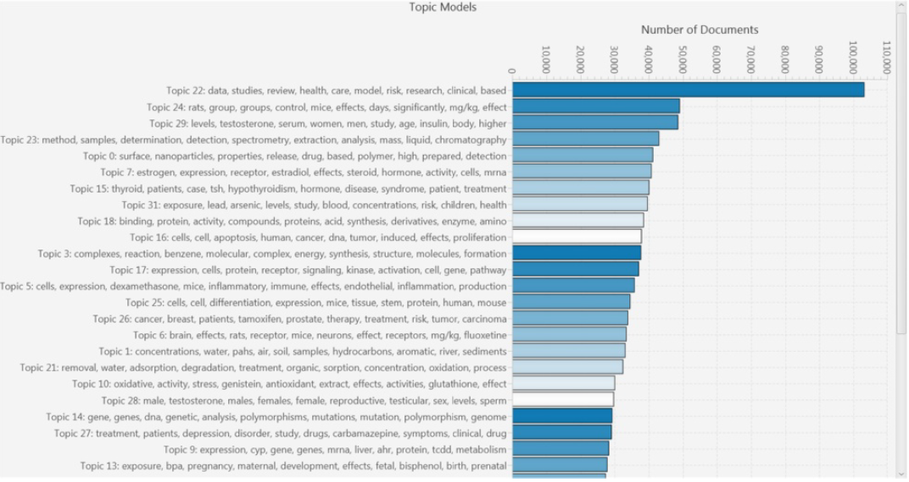
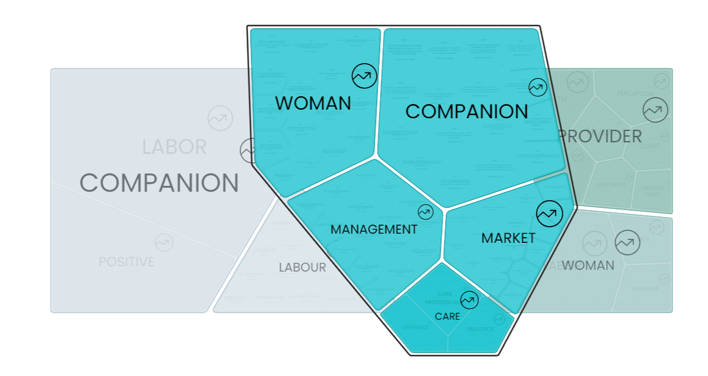
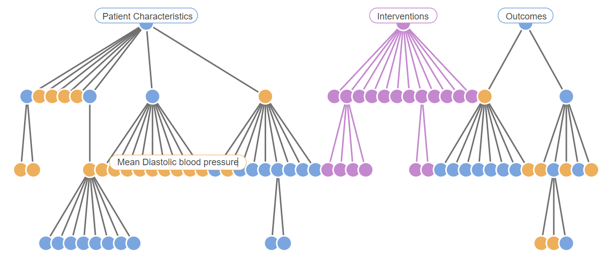
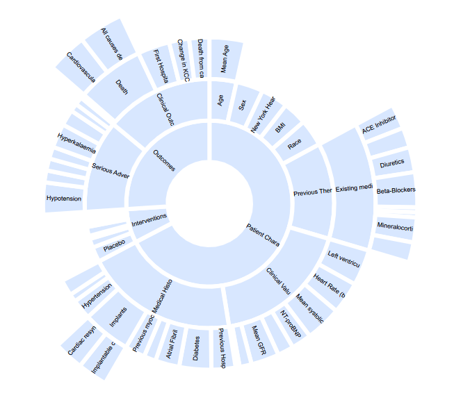
This survey presents a comprehensive review of the use of Artificial Intelligence (AI) in Systematic Literature Reviews (SLRs). A SLRs is a rigorous and organised methodology that assesses and integrates previous research on a given topic. Numerous tools have been developed to assist and partially automate the SLR process. The increasing role of AI in this field shows great potential in providing more effective support for researchers, moving towards the semi-automatic creation of literature reviews. Our study focuses on how AI techniques are applied in the semi-automation of SLRs, specifically in the screening and extraction phases. We examine 21 leading SLR tools using a framework that combines 24 traditional features with 11 AI features. We also analyse 11 recent tools that utilize large language models for searching the literature and assisting academic writing. The paper discusses current trends in the field, outlines key research challenges, and suggests directions for future research.
In this page, we report the tables we have developed when conducting our analysis on the Systematic Literature Review Tools.
In this section, we report three tables that describe the 21 systematic literature review tools examined according to both generic and AI-based features. In Section 1.1 and Section 1.2, we present the analysis of the AI features for the screening and the extraction phases, respectively. In Section 1.3, we report the analysis of the tools according to the generic features. A copy of these tables is persistently available on ORKG.
Explore these tables on ORKG| Tool | Research Field | SLR Task | Human Interaction | Approach | Text Representation | Input | Output | Minimum Requirement | Model Execution | Pre-screening Support | Post-Screening Support |
|---|---|---|---|---|---|---|---|---|---|---|---|
| Abstrackr | Any | Classification of relevant papers. | Ranking papers as relevant and irrelevant. | ML classifier (Active Learning) based on SMV applying constrained weightspace. | Bag of words. | Title & Abstract | Pre classification of papers based on inclusion probability. | - | Synchronous: the model updates in the background as soon as a new paper is added. | Keywords search: It searches by keywords that could be color by level of relevance. | NO |
| ASReview | Any | Classification of relevant papers. | Ranking papers as relevant and irrelevant. | ML classifier (Active Learning) based on Naive Bayes(default), SMV , logistic regression, RandoM Forest or Simple NN. | Bag of words. Embeddings: SentenceBERT, doc2vec. |
Title & Abstract | Pre classification of papers based on inclusion probability (likelihood of relevance from 0 to 1). For values greater than 0.5 the papers are marked as relevant. | Relevant papers: 1. Irrelevant papers: 1. |
Synchronous | Keywords search: Basic search trough keywords | NO |
| Colandr | Any | Task 1: Classification of relevant papers. Task 2: Identification of the category attributed to the paper by the user. |
Task 1: Ranking papers as relevant and irrelevant. Task 2: The user has to assigned categories (tags) to the papers. |
Task 1: Similarity-based method: Identifies co-occurrences of words around the keywords selected by
the
user (Active Learning). Task 2: NER for Locations (Active Learning). ML classifier for other tags based on logistic regression (Active Learning). |
Task 1: Embeddings: Word2vec. Task 2: Embeddings: Glove |
Task 1: Title & Abstract Task 2: Full content |
Task 1: Pre classification of papers based on inclusion probability (relevance). Task 2: Listing of sentences that best predicts the label (High, Medium, Low). |
Task 1: 10 relevant papers and 10 irrelevant papers. Task 2: Minimum 50 papers. |
Synchronous for both tasks | Keywords search: It searches by keywords that could be color by level of relevance. | NO |
| Covidence | Any | Task 1: Classification of relevant papers. Task 2: Identification of biomedical studies (RCTs). |
Task 1: Ranking papers as relevant and irrelevant. Task 2: No user interaction. |
Task 1: ML classifier (Active Learning) based on two ensembles SVM. Task 2: ML classifier (Superivised Learning) bassed on SVM (RCT classifier). |
Bag of words for both tasks: ngrams. | Task 1: Title & Abstract Task 2: Title & Abstract |
Task 1: Pre classification of papers based on inclusion probability (relevancy prediction). Task 2: Pre classification of papers based on inclusion probability (from 0 to 1). For values greater than 0.24 the papers are marked as Possible RCT. |
Task 1: 2 relevant papers and 2 irrelevant papers. Task 2: Not Applicable. |
- | Keywords search: Basic search trough keywords | NO |
| DistillerSR | Any | Classification of relevant papers. | Ranking papers as relevant and irrelevant. | ML classifiers (Active Learning) based on SVM or Naive Bayes. | Bag of words. | Title & Abstract | Naive Bayes: Pre classification of papers based on inclusion probability (prediction score from 0 to
1).
For values greater or equal than 0.5 the papers are likely to marked as relevant. SVM: Pre classification of papers based on binary classification (from 0 to 1 and then define Include, Exclude, or Cannot Decide). |
Relevant papers: 10. Irrelevant papers: 40. |
- | Keywords search: Basic search trough keywords | None |
| EPPI-Reviewer | Any | Task 1: Classification of relevant papers. Task 2: Identification of biomedical studies (RCTs, Systematic Reviews, Economic Evaluations, COVID-19 categories, long COVID). |
Task 1: Ranking papers as relevant and irrelevant. Task 2: No user interaction. |
Task 1: ML classifier (Active Learning) based on SVM. Task 2: ML classifier (Superivised Learning) based on SVM for Cochrane RCT. For Origina RCT, Systematic Review, Economic Evaluations, COVID-19 categories, and Identify Long COVID the information is not available. |
Task 1: Bag of words (ngrams). Task 2: The Cochrane RCT classifer uses bag of words. For the other approaches the information is not available. |
Task 1: Title & Abstract Task 2: Title & Abstract |
Task 1: Pre classification of papers based on inclusion probability (probability score from 0 to
100). Task 2: Pre classification of papers based on inclusion probability (from 0 to 1). For values greater than 0.24 the papers are marked as Possible RCT. |
Task 1: 5 relevant papers. Number of irrelevant papers not available. Task 2: Not Applicable |
Synchronous for both tasks | Keywords search: It searches by keywords that could be highlighted; Tags: It searches by terms or tags assigned after reading the paper. |
NO |
| FAST2 | Any | Classification of relevant papers. | Ranking papers as relevant and irrelevant. | ML classifier (Active Learning) based on SVM. | Bag of words. | Title & Abstract | Pre classification of papers based on inclusion probability (decision score from 0 to 1). | - | Synchronous | NO | NO |
| Iris.ai | Any | Clustering of Abstracts | Task 1: Exploratory search: When the researcher is novice or exploring a new field. 1.1 Provide a seed idea (300-500 words) or a title or abstract of a paper. 1.2 Select the relevant papers from the visual map manually or using the search filter. In the latter they can narrow down the results based on topics or concepts using the analyze tool. Task 2: Advanced search: When the researcher has expertise on the topic. 2.1 Dataset selection (online database or their own records). 2.2 Clustering of results with the search filter option which will allow him to apply the analyze tool and/or the context filter. 2.3 Selection of the relavant papers. 2.4 Repeat steps 2.2 and 2.3 until they considers appropriate to stop. |
Similarity-based method: Matches the fingerprint of the text or abstract with the fingerprints of the
papers of the databases CORE, PubMed, US Patent or CORDIS (Unsupervised Learning). The fingerprint is a vector representation of the most meaningful words and their synonyms of the text or abstract. |
Embeddings. | Title & Abstract | Pre classification of papers based on inclusion probability (relevance score from 0 to 1 with threshold being 0.4 and 0.9). | Not Applicable | Synchronous | Keywords search: Basic search trough keywords; Topic Groups: from a global topic (what topics do these articles fall within from an overall scientific level) as well as a specific topic (within this reading list, what topics do the articles fall within) based on visual maps. |
Abstractive summarisation based on the selected papers. |
| LitSuggest | Biomedicine | Classification of relevant papers. | Ranking papers as relevant and irrelevant. | ML classifier (Active Learning) based on logistic regression. | Bag of words. | Title & Abstract | Pre classification of papers based on inclusion probability (relevance prediction from 0 to 1). | - | Synchronous | NO | NO |
| Nested Knowledge | Any | Classification of relevant papers. | Ranking papers as relevant and irrelevant. | ML classifier (Active Learning) which is unkown. | - | Title & Abstract | Pre classification of papers based on inclusion probability (inclusion prediction). | - | - | Keywords search: Basic search trough keywords; PICO identification: Highlights the parts of a PICO question in the abstract; |
Ontology based on the user classification. |
| PICOPortal | Any | Task 1: Classification of relevant papers. Task 2: Identification of biomedical studies (RCTs). |
Task 1: Ranking papers as relevant and irrelevant. Task 2: No user interaction. |
Task 1: ML classifier (Active Learning) based on SVM. Task 2: ML classifier (Superivised Learning) based voting system implementing decision tree or deep learning. |
Embeddings for task 2: BioBERT. No information regardin Task 1. |
Task 1: Title & Abstract Task 2: Title & Abstract |
Task 1: Pre classification of papers based on inclusion probability. Task 2: Pre classification of papers based on inclusion probability (from 0 to 1). |
- | Synchronous for both tasks | PICO identification: Highlights the parts of a PICO question in the abstract. | NO |
| pitts.ai | Biomedicine | Identification of biomedical studies (RCTs). | No user interaction. | ML classifier (Superivised Learning) based on SVM. | Embeddings: SciBERT | Title & Abstract | Pre classification of papers based on inclusion probability (prediction probability from 0 to 1). | Not Applicable | Synchronous | NO | NO |
| Rayyan | Any | Classification of relevant papers. | Ranking papers as relevant and irrelevant. | ML classifier (Active Learning) based on SVM. | Bag of words: ngrams | Title & Abstract | Pre classification of papers based on inclusion probability (score probability). The score is based on a 5 star scheme, higher score identifies the relevant papers. |
Relevant papers: 5. Irrelevant papers: 5. |
Synchronous | Keywords search: It searches by keywords that could be highlighted; Other searches: It searches by author or publication year; Boolean Operator: It searches by the combination of boolean operators(AND, OR, NOT) with keywords. PICO identification: Highlights the parts of a PICO question in the abstract. Location facet: Extracts the study locations (highly applicable in biomedical studies). Tpoics: Extracts topics enriching them with MeSH terms. Biomedical keywords: Prepopulates a set of keywords and phrases (highly applicable in RCT). |
NO |
| Research Screener | Any | Classification of relevant papers. | Ranking papers as relevant and irrelevant. | ML classifier (Active Learning) based on unkown algorithm. | Embeddings: paragraph embedding | Title & Abstract | Pre classification of papers based on inclusion probability (inclusion probability). | Relevant papers: 1. Irrelevant papers: Information not available. |
Synchronous | NO | NO |
| RobotAnalyst | Any | Classification of relevant papers. | Ranking papers as relevant and irrelevant. | ML classifier (Active Learning) based on SVM. | Bag of words. | Title & Abstract | Pre classification of papers based on inclusion probability (inclusion confidence from 0 to 1). | - | Synchronous | Topic modelling: It assigned a topic to a paper based on the most recurrent terms which could be
shared
by other papers; Clustering: groups paper on the most common terms; Keywords/Term search: searches by keywords or terms(noun phrases); Other criterias: Document id, Publication Year, Author, Type of Publication, Journal, Notes, Time of screening decision, retrieval method; |
NO |
| RobotReviewer/RobotSearch | Biomedicine | Identification of biomedical studies (RCTs). | No user interaction. | ML classifier (Active Learning) based on SVM. | Embeddings: SciBERT | Title & Abstract | Pre classification of papers based on inclusion probability (prediction probability from 0 to 1). | Relevant papers: NA. Irrelevant papers: NA. |
- | PICO model: It colours the different PICO elements. | NO |
| SWIFT-Active Screener | Any | Classification of relevant papers. | Ranking papers as relevant and irrelevant. | ML classifier (Active Learning) based on log-linear. | Bag of words. | Title & Abstract | Pre classification of papers based on inclusion probability (inclusion rate from 0 to 1). | Relevant papers: 1. Irrelevant papers:1. |
Asynchronous: The model updates every 30 papers. There must be a gap of 2 minutes between the last model built and the current model built. | Keywords search: Basic search trough keywords | NO |
| SWIFT-Review | Biomedicine | Classification of relevant papers. | Ranking papers as relevant and irrelevant. | ML classifier (Active Learning) based on log-linear. | Bag of words. | Title & Abstract | Pre classification of papers based on inclusion probability (priority ranking from 0 to 1). | Relevant papers: 1. Irrelevant papers:1. |
Synchronous | Keywords search: Basic search trough keywords. Topic modelling: It assigned a topic to a paper based on the most recurrent terms which could be shared by other papers; Keywor search: searches by keywords or tags; |
NO |
| SysRev.com | Any | Classification of relevant papers. | Ranking papers as relevant and irrelevant. | ML classifier (Active Learning) based on a customized architecture similar to cross attention. | - | Title & Abstract | Pre classification of papers based on inclusion probability (prediction probability). | Relevant papers: 30. Irrelevant papers: 30. |
Asynchronous: The model updates nightly. | NO | NO |
-: No information available
| Tool | Research Field | SLR Task | Approach | Text Representation | Input | Output |
|---|---|---|---|---|---|---|
| RobotReviewer/RobotSearch | Biomedical | Identifies risks of bias: how reliable are the results? | ML classifier, combining a lineal model and a Convolutional Neural Network (CNN) model. These models are trained on a dataset containing manually annotated sentences stating the level of bias. |
Bag of word: ngrams. Embeddings: embedding layer from CNN Model. |
Full-text paper. | Risk of bias classification (as Low, High, Unclear) |
| ExaCT | Biomedical | NER of Randomised Controlled Trials | Task 1: ML classifier based on SVM to identify sentences regarding a control trial. Task 2: Rule base detection to identify the 21 CONSORT categories. |
Bag of words: ngrams. | Full-text paper. | Possible RCT entities |
| Dextr | Environmental Health Science | Task 1: NER of animal studies. Task 2: Entity linking of animal studies. |
Task 1: ML Classifier implementing a neural network model based on bidirectional LSTM with a
Conditional
Random Field (BI-LSTM-CRF) architecture. Task 2: Linking according to a customised ontology |
Task 1: Embeddings: GloVe, ELMo. Task 2: Not Applicable. |
Title and Abstracts | Task 1: Possible animal entities. Task 2: Relationships of animal models and exposures vs experimentas ot endpoints vs experiments. |
| Iris.ai | Any | Task 1: NER of entities selected by the user. Task 2: Entity linking of the identified entities. |
Task 1: ML classifier. Algorithim is unknown. Task 2: Uses a knowledge graph to represent the relations of within the entities on the paper or between the entities of the table. The technical implementation is unknown. |
Task 1: Embeddings: word embedding. Task 2: Not Applicable. |
Full-text paper. | Task 1: Possible entities based on a confidence interval. Task 2: Additional semantics on the extracted entities. |
| Tool | Multiplatform | Multiple user roles | Multiple user support | Project auditing | Project progress | Authentication | Status of software | Automated full-text retrieval | Automated search | Snowballing | Manual reference importing | Manually attaching full-text | Reference importing | Deduplication | Discrepancy resolving | In-/excluding references | Reference labelling & comments | Screening phases | Exporting results | Flow diagram creation | Protocol | Living/updatable | Free to use | SLR stage |
|---|---|---|---|---|---|---|---|---|---|---|---|---|---|---|---|---|---|---|---|---|---|---|---|---|
| Abstrackr | Yes | Single | 2 | Yes | Limited | Basic | Stable release | No | None | No | Yes | No | PMID; csv; xml | No | Yes | No | Yes | Title & Abstract | csv; xml | No | No | No | Yes | Screening |
| Colandr | Yes | Single | 2 | No | Limited | Basic | Stable release | No | None | No | No | No | txt; ris; bib | No | Yes | Yes | Yes | Title & Abstract | csv | No | Yes | No | Yes | Screening |
| DistillerSR | Yes | Multiple | >1 | Yes | Limited | Basic | Stable release | Yes | PubMed | No | Yes | Yes | csv; enlx; ris; zip; zip(japic) | Yes | Yes | Yes | Yes | Title & Abstract + Full Content | - | Yes | No | No | No | Screening |
| EPPI-Reviewer | Yes | Multiple | >1 | Yes | Detailed | Basic | Stable release | No | PubMed | No | Yes | Yes | ris; PMID; ciw; | Yes | Yes | Yes | Yes | Title & Abstract + Full Content | The screened papers go to the next stage which is information extraction | No | No | No | No | Screening |
| LitSuggest | Yes | Single | No | No | Limited | Basic | Stable release | No | PubMed | No | No | No | PMID | No | No | No | No | Title & Abstract | tsv | No | No | Yes | Yes | Screening |
| Nested Knowledge | Yes | Multiple | >1 | Yes | Detailed | Basic | Stable release | Yes | PubMed; Europe PMC; DOAJ; ClinicalTrials.gov | No | No | Yes | nBIB; ris | Yes | Yes | Yes | Yes | Title & Abstract | csv; ris | Yes | Yes | No | No | Screening |
| Rayyan | Yes | Multiple | >1 | Yes | Detailed | Basic | Stable release | No | None | No | Yes | Yes | enw; xml; nbib; ciw; ris; bib; cvs | Yes | Yes | Yes | Yes | Title & Abstract + Full Content | ris; bib; enw; csv | Yes | No | No | Yes | Screening |
| RobotAnalyst | Yes | Single | No | No | Limited | Basic | Stable release | No | PubMed | No | Yes | No | txt; nbib; ris | No | No | Yes | No | Title & Abstract | ris | No | No | No | Yes | Screening |
| SWIFT-Active Screener | Yes | Multiple | >1 | Yes | Detailed | Basic | Stable release | No | None | No | No | Yes | PMID; xml; ris | Yes | Yes | Yes | Yes | Title & Abstract + Full Content | csv; json | No | Yes | No | No | Screening |
| SWIFT-Review | Yes | Single | No | No | No | Basic | Stable release | No | None | No | No | No | PMID; xml | No | No | No | No | Title & Abstract | txt | No | No | No | Yes | Screening |
| FAST2 | Yes | Single | No | No | No | None | Stable release | No | None | No | No | No | - | No | No | No | No | Title & Abstract | No export available | No | No | No | Yes | Screening |
| ASReview | Yes | Single | >1 | No | Detailed | None | Stable release | No | None | No | No | No | ris; csv, xlsx; | No | No | Yes | No | Title & Abstract | csv; tsv; ris | No | No | No | Yes | Screening |
| Research Screener | Yes | Multiple | >1 | No | Limited | Basic | Stable release | No | None | No | No | No | xml | Yes | Yes | Yes | No | Title & Abstract | xml | No | No | No | Yes | Screening |
| pitts.ai | Yes | Multiple | >1 | No | Limited | Basic | Stable release | No | PubMed | No | No | No | ris | No | Yes | Yes | No | Title & Abstract | No export available | No | No | No | No | Screening |
| SysRev.com | Yes | Multiple | >1 | Yes | Limited | Basic | Stable release | No | PubMed | No | No | Yes | pmid; ris; enlx; json | No | Yes | Yes | Yes | Title & Abstract | xml; csv | No | No | No | No | Screening |
| Covidence | Yes | Multiple | >1 | No | Limited | Basic | Stable release | No | None | No | No | Yes | xml; crs; ris | Yes | Yes | Yes | Yes | Title & Abstract + Full Content | csv; ris | Yes | No | No | No | Screening |
| RobotReviewer /RobotSearch | Yes | Single | No | No | No | None | Stable release | No | None | No | No | No | No | No | No | No | Title & Abstract | No export available | No | No | No | Yes | Screening + Extraction | |
| Iris.ai | Yes | Single | No | Yes | No | Basic | Stable release | No | CORE; PubMed; US Patent Office; CORDIS | No | No | No | bibtex | No | No | No | No | Title & Abstract | - | No | No | No | No | Screening + Extraction |
| PICO Portal | Yes | Multiple | >1 | Yes | Detailed | Basic | Stable release | Yes | None | No | No | Yes | csv; bibtex; ris; enw; xml; xls; txt; ciw | Yes | Yes | Yes | Yes | Title & Abstract | - | No | Yes | No | Yes | Screening |
| Dextr | Yes | Single | No | No | No | Basic | Stable release | NA | None | NA | NA | NA | ris, pdf | NA | No | NA | NA | Not applicable | csv; zip | NA | NA | NA | Yes | Extraction |
| ExaCT | Yes | Single | No | No | No | Basic | Stable release | NA | None | NA | NA | NA | xml | NA | No | NA | NA | Not applicable | No export available | NA | NA | NA | Yes | Extraction |
-: No information available
NA: Not applicable because the tools are specifically for extraction
In this section we attach all the figures of the mauscript in high defininition (300DPI).
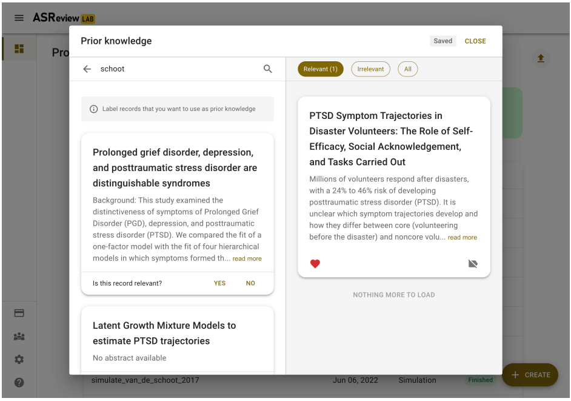
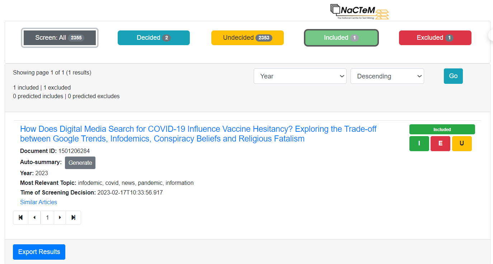
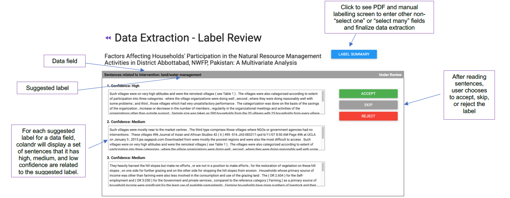
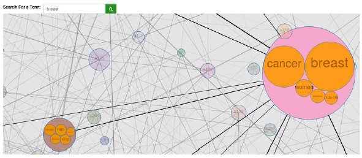
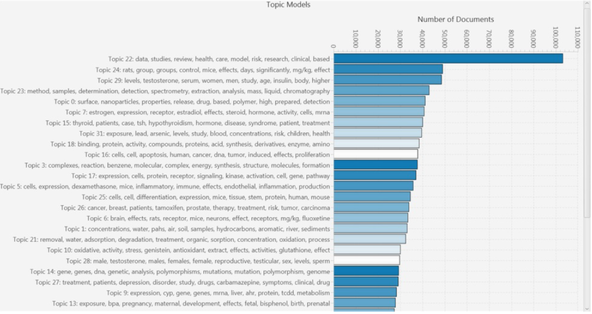
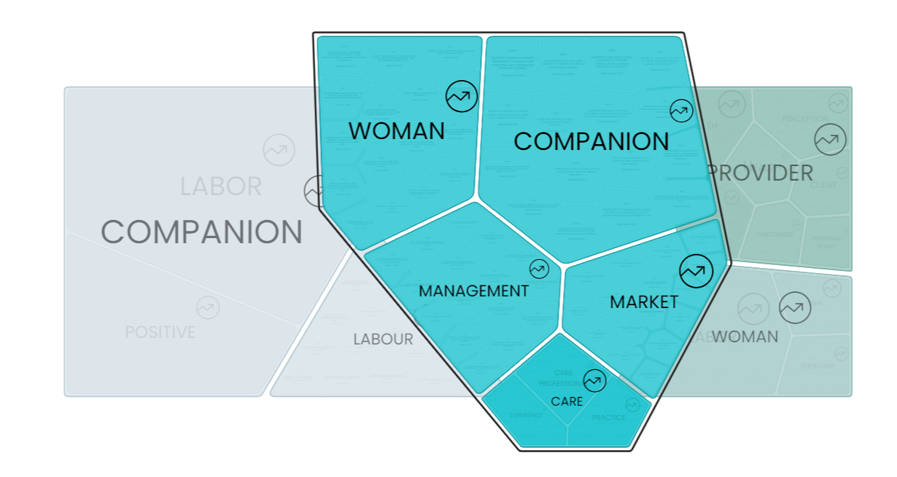
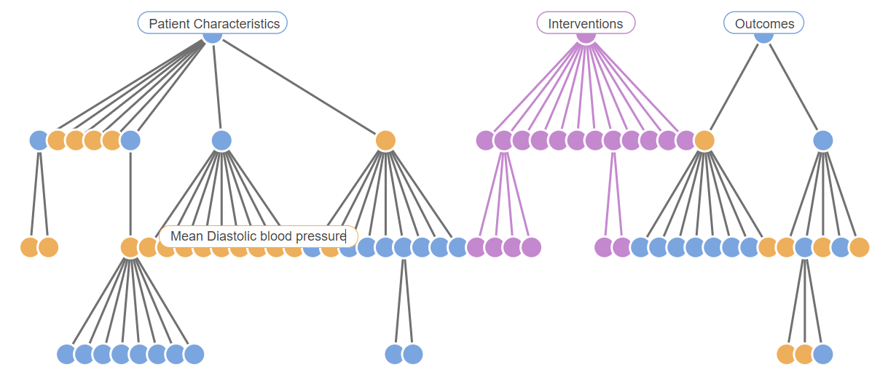
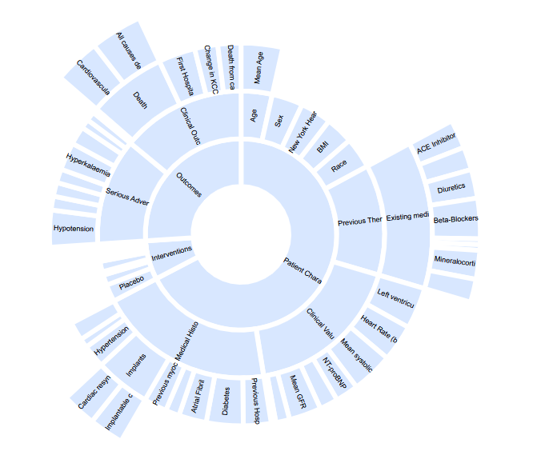
In the following table we report our PRISMA checklist, using the model from "Page MJ, McKenzie JE, Bossuyt PM, Boutron I, Hoffmann TC, Mulrow CD, et al. The PRISMA 2020 statement: an updated guideline for reporting systematic reviews. BMJ 2021;372:n71. doi: 10.1136/bmj.n71".
| Section and Topic |
Item # |
Checklist item |
Location where item is reported |
|---|---|---|---|
| TITLE |
|
||
| Title |
1 |
Identify the report as a systematic review. |
1 |
| ABSTRACT |
|
||
| Abstract |
2 |
See the PRISMA 2020 for Abstracts checklist. |
1 |
| INTRODUCTION |
|
||
| Rationale |
3 |
Describe the rationale for the review in the context of existing knowledge. |
2 |
| Objectives |
4 |
Provide an explicit statement of the objective(s) or question(s) the review addresses. |
2 |
| METHODS |
|
||
| Eligibility criteria |
5 |
Specify the inclusion and exclusion criteria for the review and how studies were grouped for the syntheses. |
5 |
| Information sources |
6 |
Specify all databases, registers, websites, organisations, reference lists and other sources searched or consulted to identify studies. Specify the date when each source was last searched or consulted. |
5,6 |
| Search strategy |
7 |
Present the full search strategies for all databases, registers and websites, including any filters and limits used. |
5,6 |
| Selection process |
8 |
Specify the methods used to decide whether a study met the inclusion criteria of the review, including how many reviewers screened each record and each report retrieved, whether they worked independently, and if applicable, details of automation tools used in the process. |
5,6 |
| Data collection process |
9 |
Specify the methods used to collect data from reports, including how many reviewers collected data from each report, whether they worked independently, any processes for obtaining or confirming data from study investigators, and if applicable, details of automation tools used in the process. |
5,6,23 |
| Data items |
10a |
List and define all outcomes for which data were sought. Specify whether all results that were compatible with each outcome domain in each study were sought (e.g. for all measures, time points, analyses), and if not, the methods used to decide which results to collect. |
N/A |
| 10b |
List and define all other variables for which data were sought (e.g. participant and intervention characteristics, funding sources). Describe any assumptions made about any missing or unclear information. |
8,10,11 |
|
| Study risk of bias assessment |
11 |
Specify the methods used to assess risk of bias in the included studies, including details of the tool(s) used, how many reviewers assessed each study and whether they worked independently, and if applicable, details of automation tools used in the process. |
5,6 |
| Effect measures |
12 |
Specify for each outcome the effect measure(s) (e.g. risk ratio, mean difference) used in the synthesis or presentation of results. |
N/A |
| Synthesis methods |
13a |
Describe the processes used to decide which studies were eligible for each synthesis (e.g. tabulating the study intervention characteristics and comparing against the planned groups for each synthesis (item #5)). |
23 |
| 13b |
Describe any methods required to prepare the data for presentation or synthesis, such as handling of missing summary statistics, or data conversions. |
N/A |
|
| 13c |
Describe any methods used to tabulate or visually display results of individual studies and syntheses. |
N/A |
|
| 13d |
Describe any methods used to synthesize results and provide a rationale for the choice(s). If meta-analysis was performed, describe the model(s), method(s) to identify the presence and extent of statistical heterogeneity, and software package(s) used. |
N/A |
|
| 13e |
Describe any methods used to explore possible causes of heterogeneity among study results (e.g. subgroup analysis, meta-regression). |
N/A |
|
| 13f |
Describe any sensitivity analyses conducted to assess robustness of the synthesized results. |
N/A |
|
| Reporting bias assessment |
14 |
Describe any methods used to assess risk of bias due to missing results in a synthesis (arising from reporting biases). |
21, 22,23 |
| Certainty assessment |
15 |
Describe any methods used to assess certainty (or confidence) in the body of evidence for an outcome. |
NA |
| RESULTS |
|
||
| Study selection |
16a |
Describe the results of the search and selection process, from the number of records identified in the search to the number of studies included in the review, ideally using a flow diagram. |
Fig 1 |
| 16b |
Cite studies that might appear to meet the inclusion criteria, but which were excluded, and explain why they were excluded. |
7 |
|
| Study characteristics |
17 |
Cite each included study and present its characteristics. |
Appendix A |
| Risk of bias in studies |
18 |
Present assessments of risk of bias for each included study. |
N/A |
| Results of individual studies |
19 |
For all outcomes, present, for each study: (a) summary statistics for each group (where appropriate) and (b) an effect estimates and its precision (e.g. confidence/credible interval), ideally using structured tables or plots. |
Appendix A |
| Results of syntheses |
20a |
For each synthesis, briefly summarise the characteristics and risk of bias among contributing studies. |
12-21 |
| 20b |
Present results of all statistical syntheses conducted. If meta-analysis was done, present for each the summary estimate and its precision (e.g. confidence/credible interval) and measures of statistical heterogeneity. If comparing groups, describe the direction of the effect. |
Table 4 |
|
| 20c |
Present results of all investigations of possible causes of heterogeneity among study results. |
N/A |
|
| 20d |
Present results of all sensitivity analyses conducted to assess the robustness of the synthesized results. |
N/A |
|
| Reporting biases |
21 |
Present assessments of risk of bias due to missing results (arising from reporting biases) for each synthesis assessed. |
N/A |
| Certainty of evidence |
22 |
Present assessments of certainty (or confidence) in the body of evidence for each outcome assessed. |
N/A |
| DISCUSSION |
|
||
| Discussion |
23a |
Provide a general interpretation of the results in the context of other evidence. |
23-31 |
| 23b |
Discuss any limitations of the evidence included in the review. |
21-23 |
|
| 23c |
Discuss any limitations of the review processes used. |
21-23 |
|
| 23d |
Discuss implications of the results for practice, policy, and future research. |
23-31 |
|
| OTHER INFORMATION |
|
||
| Registration and protocol |
24a |
Provide registration information for the review, including register name and registration number, or state that the review was not registered. |
Not registered |
| 24b |
Indicate where the review protocol can be accessed, or state that a protocol was not prepared. |
Not registered |
|
| 24c |
Describe and explain any amendments to information provided at registration or in the protocol. |
N/A |
|
| Support |
25 |
Describe sources of financial or non-financial support for the review, and the role of the funders or sponsors in the review. |
N/A |
| Competing interests |
26 |
Declare any competing interests of review authors. |
None |
| Availability of data, code and other materials |
27 |
Report which of the following are publicly available and where they can be found: template data collection forms; data extracted from included studies; data used for all analyses; analytic code; any other materials used in the review. |
Supplementary Material, Appendix A |
Here is the codebase we developed for the snowballing search on Semantic Scholar.
Go up Explore code (opens on Zenodo.org)F. Bolaños Burgos, A. Salatino, F. Osborne, and E. Motta. Artificial intelligence for systematic literature reviews: Opportunities and challenges. Submitted to Artificial Intelligence Review, 2024.
BibTeX
@article{bolanos2024,
title={Artificial Intelligence for Systematic Literature Reviews: Opportunities and Challenges},
author={Bolaños Burgos, Francisco and Salatino, Angelo and Osborne, Francesco and Motta, Enrico},
journal={Submitted to Artificial Intelligence Review},
volume={},
number={},
pages={},
year={2024},
publisher={Springer}
}
Go up
This work is licensed under CC BY 4.0